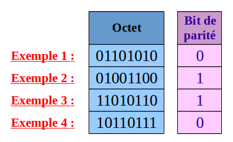
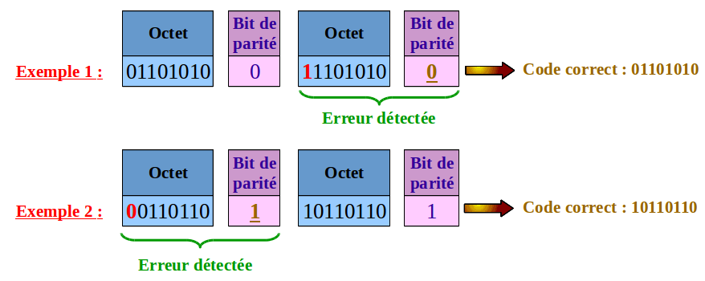

Les données numériques sont transportées par les câbles d'une machine informatique vers une autre. On a déjà vu que ces données numériques sont organisées en paquets dans lesquels on a ajouté des informations correspondants aux différentes couches. Au niveau du codage informatique, on a vu qu'on utilise toujours le codage binaire. Autrement dit un paquet est une suite de 0 et de 1. C'est cette suite de 0 et de 1 que l'on doit coder dans un signal électrique pour pouvoir le transporter par un câble. Il existe plusieurs façons de coder une suite de 0 et de 1 dans un signal électrique. Pour le protocole ethernet on utilise le code Manchester.
Le principe du code de Manchester qui est utilisé dans le protocole ethernet au niveau
des paires torsadées est de faire varier la tension électrique en fonction du temps.
Dans une paire torsadée le signal est cadensé à environ 10 Mhz ce qui veut dire qu'on transmet
10 millions de bits par seconde.
Donc la période est T = 0,1 micro-seconde = 0,0000001 seconde,
et c'est ainsi la durée de transmission d'un seul bit. Le principe du code de Manchester est le suivant :
un 0 est codé par un front ascendant, c'est à dire par un changement de tension de - 5 Volts à + 5 Volts,
et un 1 est codé par un front descendant, c'est à dire un changement de tension de + 5 Volts à - 5 Volts.
Lorsque des données numériques sont transmises, des perturbations (par exemple électromagnétiques) peuvent les endommager. Les codes détecteurs et correcteurs d’erreurs permettent, dans une certaine mesure, de détecter si les données ont été altérées et si c’est le cas, de reconstituer les données d’origine par un mécanisme de correction.
Le bit de parité permet d'obtenir un code qui détecte une erreur. On va regarder son application sur un octet. Le principe est le suivant : on compte le nombre de 1 présent dans l'écriture binaire de l'octet. Si ce nombre est pair, le bit de parité sera égal à 0 et si ce nombre est impair le bit de parité sera égal à 1.

Ainsi si une erreur de transmission se produit sur un seul bit de l'octet, le bit de parité ne corespondra plus
à l'octet, c'est pourquoi on dit qu'il détecte une erreur. Par contre si deux erreurs se produisent sur
deux bits de l'octet, le bit de parité ne va pas le détecter. On dit que le bit de parité est un code 1-détecteur.
On reprend ci-dessous les 4 exemples précédents, mais dans l'exemple 2 et dans l'exemple 3 une erreur de
transmission s'est produite sur le premier bit. Le bit de parité permet de détecter cette erreur.
Par contre dans l'exemple 4 deux erreurs de transmission se sont produites et le bit de parité ne le détecte pas.
Pour pouvoir corriger une erreur de transmission on utilise le principe de la redondance, c'est à dire qu'on envoie plusieurs fois les données numériques. Dans l'exemple ci-dessous on envoie deux fois l'octet avec son bit de parité. On obtient ainsi une code capable de détecter une erreur de transmission et de la corriger. En effet le code correct est celui pour lequel le bit de parité ne détecte pas d'erreur.
